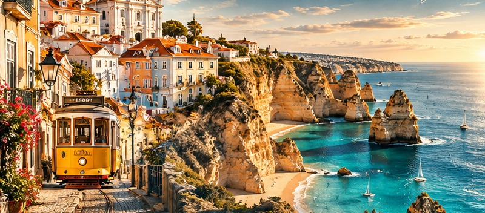

PORTUGAL
Welcome to
CRISWAY
Welcome to CRISWAY! We help travelers discover beautiful places, enjoy local food, and experience new cultures. Our mission is to show you a different side of Portugal.
blue doors, schist walls
Our mission
We want to show you a different Portugal: quiet villages, old castles and real local food.
Our travel style
Small groups, slow travel and authentic places. We like to travel calmly and meet local people.
Why CRISWAY
We plan your trip for you. You can relax, explore and enjoy every moment.
The country
Discover Portugal
Portugal is a small country in Southwestern Europe. It has a long coast, green mountains and very old villages. People are friendly, and the food is delicious.
Hidden Destinations
houses between granite rocks
Monsanto
Monsanto is a small village on a hill. The houses are between giant granite rocks. At the top, there is an old castle. It is quiet, unique and very beautiful.
- You can walk through beautiful stone streets.
- You can climb to the old castle.
- You can see amazing views of the valley.
Piódão
Piódão is a village in the mountains. The houses are made of dark schist stone, with blue doors and windows. It looks like a village from a story.
- You can explore traditional villages.
- You can walk on quiet mountain trails.
- You can take beautiful photos at night.
schist houses, blue windows
More Places to Discover
Do you want a calm trip? These villages are a great alternative to the busy tourist routes.
medieval walls and castle
Sortelha
Sortelha is a medieval village with strong stone walls and a small castle. The streets are narrow and old. It is quiet and very authentic.
- You can walk on the old walls.
- You can visit the castle.
- You can enjoy a peaceful sunset.
hilltop castle and white houses
Marvão
Marvão is a village on top of a high hill, near the border with Spain. It has a famous castle, white houses and amazing views.
- You can visit the historic castle.
- You can see the views to Spain.
- You can walk the narrow streets.
Travel Tips
You should wear comfortable shoes.
Village streets are steep and made of stone.
You should bring a light jacket.
Nights in the mountains can be cold.
You should respect local traditions.
People live in these villages. Be quiet and kind.
You shouldn’t leave trash in natural areas.
Take your trash with you. Keep nature clean.
You should check the weather before traveling.
The weather in the mountains can change fast.
You shouldn’t forget your travel documents.
Keep your passport or ID in a safe place.
Food You Must Try
Bacalhau à Brás
Bacalhau à Brás is a delicious and savory dish. It has codfish, potatoes, eggs, onions, and olives.
codfish · thin fried potatoes · eggs · onions · black olives · parsley
Caldo Verde
Caldo Verde is a warm and simple green soup. It has potatoes, green cabbage, olive oil, and a slice of chouriço.
potatoes · green cabbage · olive oil · chouriço · garlic
Food You Must Try
Francesinha
Francesinha is a big and tasty sandwich from Porto. It has bread, ham, sausage, steak, and melted cheese, with a hot sauce on top.
bread · ham · sausage · steak · cheese · tomato and beer sauce
Pastel de Nata
Pastel de Nata is a small, sweet custard tart. It has crispy pastry and a creamy egg filling. You can add cinnamon on top.
puff pastry · eggs · milk · sugar · cinnamon
Activities You Can Do
You can visit historic castles.Sortelha and Marvão have amazing old castles.
You can explore traditional villages.Walk slowly and discover small streets.
You can try delicious Portuguese food.Eat in small family restaurants.
You can take beautiful photographs.Sunrise and sunset are the best times.
You can enjoy peaceful nature walks.The mountains have many quiet trails.
Activities You Can’t Do
Every country has rules. These rules protect people, nature and history. CAN’T + base verb = it is not allowed.
You can’t drive without a valid driver’s license.
You can’t hunt protected animals.
You can’t park in prohibited areas.
You can’t enter closed areas of heritage sites.
You can’t make fires in forest areas on high-risk days.
Some rules depend on local laws and the time of year. Always read the signs and follow the instructions of local authorities.
Your Packing List
What do you need to bring? Check each item before you leave home.
You need to pack light and smart.
Frequently Asked Questions
Where would you like to travel?
I would like to travel to Portugal.
Do you enjoy traveling with your friends and family?
Yes, I enjoy traveling with my friends and family.
How do you plan to travel around Portugal?
I plan to travel by train and bus.
When do you plan to visit Portugal?
I plan to visit Portugal in spring.
Frequently Asked Questions
How can you avoid spending too much money?
You can avoid spending too much money by using public transportation.
What do you need to bring?
You need to bring your travel documents and comfortable clothes.
What can your child enjoy doing?
Your child can enjoy exploring castles and visiting parks.
When would your partner prefer to travel?
My partner would prefer to travel in September.
Why do you want to visit Portugal?
I want to visit Portugal because it has beautiful villages and delicious food.
Your CRISWAY Experience
Explore Monsanto
Walk through the stone streets and climb to the castle. Watch the sunset over the valley.
Discover Sortelha
Walk on the medieval walls and enjoy a quiet evening in the village.
Visit Marvão
Visit the castle and see the views to Spain from the top of the hill.
Food & Culture
Enjoy local food and cultural experiences. Try traditional dishes and meet local people.
This is a suggested route. Please check transport options and opening times before you travel.

Portugal is more than famous cities and beaches. It is a country full of history, beautiful villages, delicious food, and unforgettable experiences.
With CRISWAY, your next adventure starts here.
Photo credits · Wikimedia Commons
- p.2 Piódão — Ricardo Saraiva de Almeida · CC BY-SA 4.0
- p.4 Monsanto — Alvesgaspar · CC BY-SA 4.0
- p.4 Piódão — Inces26 · CC BY-SA 4.0
- p.5 Sortelha — Ken & Nyetta · CC BY 2.0
- p.5 Marvão — Elemaki · CC BY 3.0
- p.7 Bacalhau à Brás — Fpenteado · CC BY-SA 3.0
- p.7 Caldo verde — Pasquale Paolo Cardo · CC BY 2.0
- p.8 Francesinha — Nelson Alexandre Rocha · CC BY 2.0
- p.8 Pastéis de nata — Bex Walton · CC BY 2.0
- p.9 Monsanto — Alvesgaspar · CC BY-SA 4.0
- p.14 Monsanto — Rafael Tello · CC BY-SA 4.0
- p.14 Sortelha — Ken & Nyetta · CC BY 2.0
- p.14 Marvão — Hugo Ferreira · CC BY-SA 4.0
- p.14 Mercado do Bolhão — Jorge Franganillo · CC BY 2.0


.jpg){kind=link}
.jpg){kind=link}
.jpg){kind=link}

-Portugal.jpg){kind=link}


.jpg){kind=link}